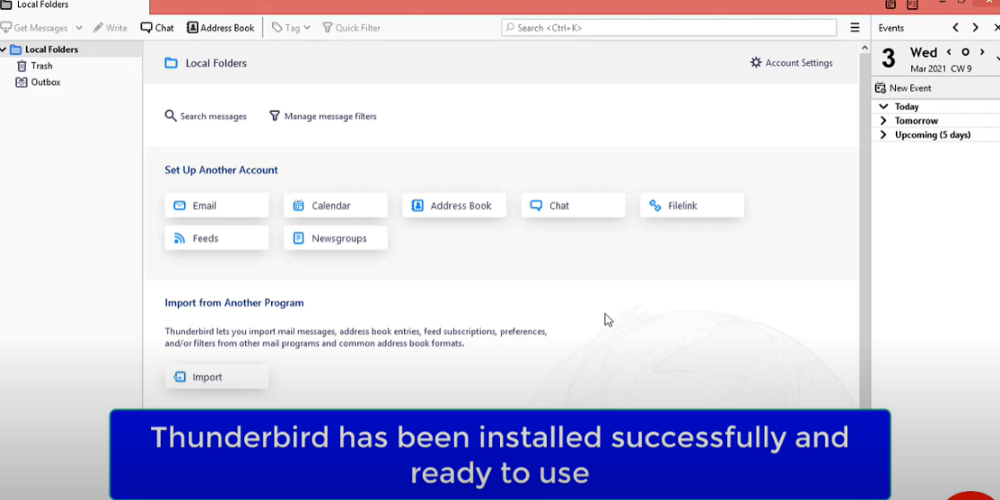

Mozilla Thunderbird
Free email application with easy setup and privacy features
1.Click start window and search firefox
2.Open google.com & type Molzila
3.Open officail website : www.thunderbird.net

4.Click on free download button
5.Click on save file
6.Thunderbird setup file is being downloaded
7.Click and open .exe file
8.Click on Run
9.Click on next, next & install
10.Click on finish

11.Thunderbird has been installed successfully and ready to use
Download the portable ZIP version of
Thunderbird 115.0
(File size: ~65 MB)
Windows 7/8/10/11 | 64-bit
About the ZIP Version
The ZIP version of Thunderbird is a portable edition that doesn't require installation. Simply extract the contents to your preferred location and run Thunderbird directly. This is ideal for USB drives or when you don't have administrative privileges.
Key Features
- Unified inbox for multiple accounts
- Built-in phishing and spam protection
- Quick search and advanced filtering
- Integrated calendar and task management
- Extensive add-on ecosystem
- Strong privacy and encryption options
System Requirements
Operating System: Windows 7/8/10/11 (64-bit)
Processor: Pentium 4 or newer with SSE2 support
Memory: 512 MB RAM (2 GB recommended)
Hard Disk Space: 200 MB free space